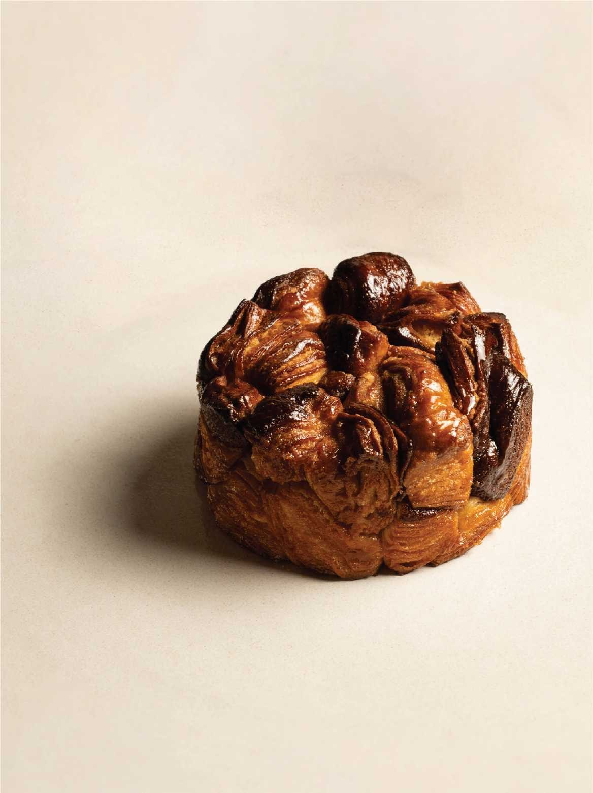
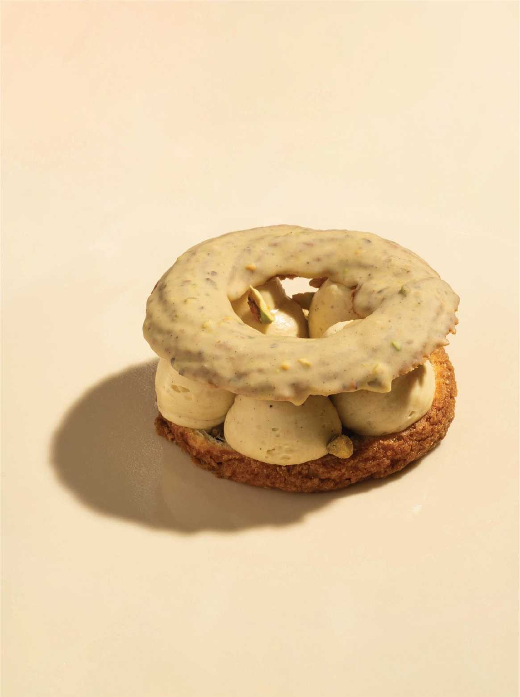
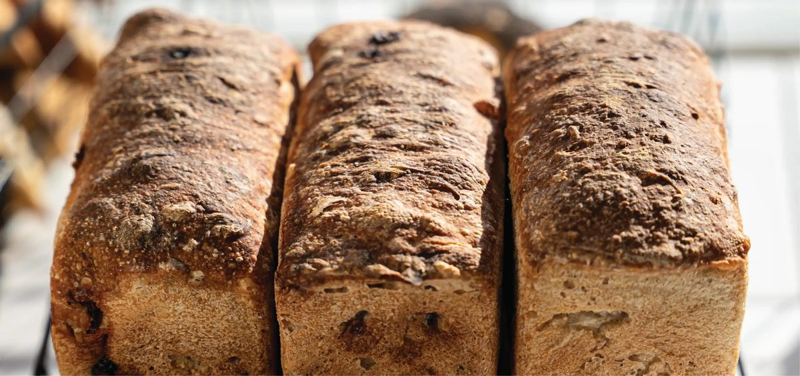
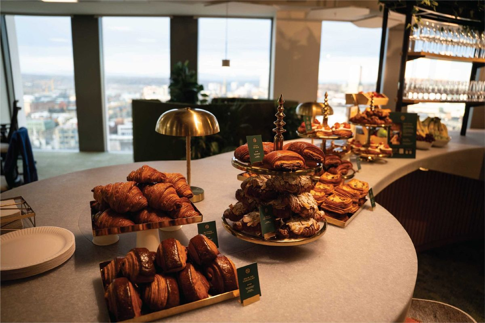

Prepared for Savour Bakery Café & Patisserie11 October 2026
xFusion Creative
Audit and proposal
One filming day a month, with you as the face of Savour.
You asked about our rates, so we did our usual homework first. We read your Instagram, your Meta ads, your website and five bakeries near you on 10 October 2026. This page sets out what we found, how we work, twelve videos we would make with you and your team on camera, and our rates.
Prepared forSavour, Coatsworth Road
Prepared byJay Williams, Fusion Creative
Checked on10 October 2026
CoversInstagram, ads, website, local bakeries, ideas, rates
21.4K followers, a busy Instagram and no ads running.
Savour has two Craft Bakers Association 2025 awards listed on your website, a BBC Look North visit, a counter in Fenwick and a catering business with office clients. Your Instagram has 21.4K followers and nine posts from 29 September to 10 October, which drew 9 to 93 likes each. The two reels at the front of your grid, both posted with partners in the week of your Fenwick news, drew 2,060 and 1,491. No Meta ads are running, and your website has no Meta Pixel.
21.4K
Instagram followers, from your profile
9 to 93
likes on each of your nine newest posts
0
Meta ads running today, 7 in the library since October 2025
4.8
your rating on Google
What is already strong, and worth building on
Bakes with detail worth filming: the brownie croissant measured to the millimetre, the Maritozzi, the Monkey Bread, and the layers of a Pain au Chocolat that your journal already explains.
Recognition: two Craft Bakers Association 2025 awards on your website, for Signature Bake and Laminated, and a BBC Look North visit to the bakery.
Two places to buy: Coatsworth Road in Gateshead, and your counter in Fenwick on Northumberland Street.
Catering for offices, from boardroom meetings in Newcastle to office breakfasts.
Ways to bring people back: The Crème Club and gift cards.
You do not need a new menu or a new look. You need short video with you and your team on camera, planned for you, filmed in a day and posted on a plan.
02 · How we work
Real people, in the venue, doing something worth watching.
Most videos we plan for a food business use one of nine formats. Each gives people a reason to watch and a reason to visit.
A reason beats a nice shot. A question, a challenge or an offer gives people a reason to comment, share or visit.
The venue is the set. Your room, your counter, your kitchen. We film in the place people will visit.
It is planned, not luck. We know which formats work before we arrive, and we pick the mix for your menu and your week.
We can walk you through examples from the food businesses we film on a call.
03 · Your website
A good looking site that cannot yet measure social.
We loaded savourbakecafe.com at desktop and phone sizes on 10 October 2026. These are the changes we would make so every video and every ad can be measured.
What we saw
Why it matters
Fix
No Meta Pixel and no TikTok Pixel
Google Analytics and a Google Ads tag are installed, but neither pixel appears anywhere in your site's code. Nothing records visitors for Instagram, Facebook or TikTok.
Add both, set to follow your cookie banner, so people who view your menu can be shown your videos again.
Ordering leaves your site
Order Online opens a page that sends people to Uber Eats or Deliveroo, so the click on those links is the last step you can measure.
Track clicks on the Uber Eats and Deliveroo links, and tag the links in your bio and ads.
No video on the home or catering page
Your site has video on the Fenwick page and the BBC Look North page, but none on the home page or the catering page.
Add a short reel to the home page and one to the catering page.
Small buttons on phones
At phone width, 47 of the 54 links and buttons are under 44 pixels tall, including Order Online.
Make Order Online, WhatsApp and the menu links at least 44 pixels tall, so they are easy to tap from Instagram.
Listings
Google shows 4.8 stars, with your phone number and website.
Deliveroo (Bensham) shows 4.8 from 79 ratings.
We could not check Tripadvisor, Uber Eats or Just Eat. Each blocked automated access, and we did not try to get around that.



Photos from savourbakecafe.com. For each of these bakes we would film the shaping, the bake and the first cut.
04 · Your social channels
Your best posts had people, news and partners.
We read the 12 posts on your Instagram grid as a logged out visitor on 10 October 2026. The first three tiles are from July and February and sit ahead of your October posts. The other nine are your newest posts. The counts are what Instagram showed on each post at that time.
Date
Caption opens with
Collaboration
Type
Likes
Comments
30 Jul 2026
"10 MINUTES TO OPENING PANIC"
Yes
Reel
2,060
121
28 Jul 2026
"Some dreams are worth waiting for." Your Fenwick news.
Yes
Reel
1,491
227
19 Feb 2026
"Boardroom ready." Catering for a meeting in Newcastle.
No
Reel
102
4
10 Oct 2026
"See you tomorrow" (posted the evening we checked)
No
Reel
16
0
9 Oct 2026
"Open today at Coatsworth Road, Gateshead"
No
Reel
25
4
8 Oct 2026
"Measured to the millimetre. For a brownie croissant."
Yes
Reel
93
14
8 Oct 2026
"DSC01854" (a photo of the coffee machine)
No
Post
9
0
6 Oct 2026
"Cinnamon buns"
No
Post
87
10
5 Oct 2026
"Anyone for an award-winning butter croissant?"
No
Post
43
5
5 Oct 2026
"We're open. Welcome back to Savour"
No
Reel
50
5
30 Sep 2026
"Worth the pause. Savour at Fenwick"
No
Reel
61
0
29 Sep 2026
"Midweek lunch, made this morning."
No
Reel
76
11
What drew the most response
Your two biggest reels were posted with partners. "10 MINUTES TO OPENING PANIC" drew 2,060 likes. Your Fenwick news drew 1,491 likes and 227 comments, the most comments of the twelve. A collaboration post shows to each partner's followers too. Both went up in the week of your Fenwick news, while a partnership ad ran from 27 to 31 July, so they are not a like for like comparison with your other posts.
A person and a skill. Of your nine newest posts, the brownie croissant reel did best, with 93 likes and 14 comments. It names the baker, shows the measuring, and was also posted as a collaboration.
One bake, plainly shown. Your post captioned simply "Cinnamon buns" drew 87 likes.
What this means. Your strongest posts had a person, a piece of news or a partner behind them. We would plan each month's videos around you and your team, and keep making collaboration posts with partners, which can also show to their followers.
4,740
TikTok followers, @savourbakecafe
28.7K
likes across your TikTok, in total
14.8K
people follow your Facebook page, per the Meta Ad Library
Your website footer also links to TikTok, Facebook, LinkedIn and Pinterest. Your TikTok following is about a fifth the size of your Instagram. We did not count your TikTok videos or check when you last posted there. Every video we make goes out on Instagram and TikTok, cut for each.
Sources: instagram.com/savourbakecafe and each post's page, tiktok.com/@savourbakecafe and the Meta Ad Library, 10 October 2026.
05 · Your ads and catering
Seven ads since October 2025, none running now.
The Meta Ad Library shows seven ads from your page in the UK. None is running today. Four of the seven were video.
Ran
What it promoted
Video
8 to 16 Oct 2025
Desserts in a Can: Eton Mess, Black Forest, Chocolate & Toffee, Lemon Meringue and Tiramisu
No
21 to 22 Oct 2025
A 21 second video linking to your Instagram profile. Active for 23 hours.
Yes
24 to 30 Oct 2025
"Not your average office spread": catering bookings
Yes
21 to 22 Nov 2025
Friday opening, 8am to 2pm, and a new menu. Active for 23 hours.
No
9 to 15 Dec 2025
Seasonal miniature selection for events, minimum order £100
No
15 to 17 Jan 2026
An office breakfast you catered
Yes
27 to 31 Jul 2026
"Sunday morning", a behind the scenes video, run as a partnership with another page
Yes
Every ad was short. None ran longer than nine days, and two were active for 23 hours. Short runs give Meta little time to learn who responds.
Catering led. Three of the seven promoted catering.
Nothing on your website measures them. With no Meta Pixel, Meta cannot see who went on to read your menu or your catering page.
Two email addresses. The October catering ad gave info@savourbakecafe.com. Your website lists hello@savourbakecafe.com. Worth checking both reach you.
Catering

One of the first three posts on your grid is catering: "Boardroom ready", a meeting in Newcastle. Three of your seven ads were catering. Your journal has a guide, "10 Things to Sort Before Booking Corporate Catering". Your seasonal miniature selection had a minimum order of £100, the same as twenty £5 pastries from your menu.
An office manager books catering when they can see what they are getting. Short video of a real setup, with the food, the timing and the finished table, shows them.
Source: Meta Ad Library, all ads from the Savour Bakery Cafe & Patisserie page, UK, 10 October 2026.
06 · Five bakeries near you
Five bakeries near you, compared.
We looked at five bakeries in Gateshead and Newcastle on Google Maps and Instagram on 10 October 2026.
Bakery
Google
Instagram
Video in the first 12 grid tiles
Savour Coatsworth Road, Gateshead
4.8
21.4K
9 of 12
Stenhouse Coatsworth Road, Gateshead, on your street
4.5
Not checked
Not checked. No website listed on Google
Urban Bakery Durham Road, Low Fell
4.8
Not checked
Not checked. No website listed on Google
Pink Lane Bakery Acorn Road, Jesmond, and three more shops
4.6
27.4K
4 of 12
Batch Bakery & Cafe Clayton Road, Jesmond
4.5
7,536
None of its own
Northern Rye Riverside Walk, Byker, and two more sites
4.9
35.8K
4 of its own
What the numbers say
Northern Rye has the most followers and the highest rating. 35.8K followers and 4.9 on Google.
You already post more video than the three we could check. 9 of the first 12 tiles on your grid are video, against 4 of their own for Pink Lane and Northern Rye and none for Batch.
A bakery a few doors along. Stenhouse, at 211 to 215 Coatsworth Road, is rated 4.5 and lists no website on Google.
You have the following, the rating and the habit of posting video. What is missing is a plan that puts you on camera every week and gives people a reason to come in.
Sources: Google Maps place panels and public Instagram profiles, 10 October 2026. Instagram for Stenhouse and Urban Bakery was not checked, because search engines blocked automated access. Bakeries are shown for comparison only.
07 · Twelve videos we would make
Built from your counter, your kitchen and your catering.
Every concept uses something you already have, with you and your team on camera. Six are built to bring people in this week. Six are built to keep your Instagram and TikTok growing.
Videos that bring people in
6 concepts
Skit
Just a few pastries
"When the office says 'just grab a few pastries'."
You take the catering call. Cut to the full spread on gold stands.
Why: turns your catering into a reason to message you.
Skit
Ten minutes to opening
"10 minutes to opening. Again."
The rush before the doors open on Coatsworth Road, played for laughs, with the team in whites and hair nets.
Why: your reel with this caption, posted with a partner, drew 2,060 likes. We would test it as a regular series.
Challenge
Guess the layers
"Guess how many layers are in this croissant. Closest wins one."
Customers guess. You cut it open and count.
Why: a challenge gives people a reason to comment and to come in and try.
Challenge
Name that bake
"One close up. Name the bake and it's yours."
Customers name the bake from a single close up shot.
Why: gets people talking about your range, not just the croissant.
Fenwick
Find us in Fenwick
"Savour, inside Fenwick on Northumberland Street."
From the street door to your counter, with what is on the counter today.
Why: your Fenwick news drew 227 comments, the most of the twelve.
Catering
What £100 gets your team
"This is what £100 of Savour looks like on the table."
The order, laid out and counted.
Why: answers the first question an office manager asks.
Organic that builds the audience
6 concepts
Owner
Ask the owner
"What should I order first?"
You answer one customer question a week, at the counter, in under 30 seconds.
Why: puts the face of Savour on a video every week.
Craft
Measured to the millimetre
"How many layers are in one croissant?"
One technique a week: the lamination, the brownie centre, the Maritozzi fill.
Why: the brownie croissant reel drew 93 likes and 14 comments, the most of your nine newest posts.
Team
Who made your croissant
"Who made your croissant this morning?"
One baker, one bake, twenty seconds each.
Why: your brownie croissant caption already names the baker. People visit people.
Series
One bake a week
"What is a Maritozzi?"
One bake from your menu, explained in 20 seconds.
Why: your post captioned simply "Cinnamon buns" drew 87 likes.
Catering
Boardroom ready
"From our kitchen to your boardroom."
A real catering job, from packing to the finished table, in under a minute, filmed where your client is happy to be on camera.
Why: catering is already in your grid, your ads and your journal.
Seasonal
Christmas breakfast for the office
"Your team's Christmas breakfast, sorted in one message."
Your seasonal selection, filmed in November so offices book before December.
Why: your seasonal miniature ad ran from 9 to 15 December last year.
08 · The plan, month by month
We plan it, you front it, we do the rest.
You do not need to think up ideas or learn to edit. We tell you what to film and what to say, film it all in one day, and turn it into a month of videos.
Week 1
Plan
A call to pick the first videos. We send a simple shot list with the lines for each one, so you know exactly what the day looks like.
Week 2
Filming day
One day at Coatsworth Road, before and during opening. You and your team on camera, the bakes, the counter and the kitchen.
Weeks 2 to 4
Posting on a plan
Videos go out on set days on Instagram and TikTok, each with a reason to visit, order or book catering.
Month 2
More of what works
We look at what brought people in and film more of it, plus Fenwick and a catering job.
Month 3
Review together
We report what the videos reached and what they led to: order clicks, catering enquiries and messages.
Every month you get: filming at Savour, edited short videos, posting on a plan and a simple monthly report. You keep every video.
09 · Our rates
Two ways to work with us.
Both include filming at Savour, editing and posting on your Instagram and TikTok. Three month minimum, then rolling. Billed monthly in advance, with the first month on signing.
Core
£899
a month, 10 to 12 videos
One filming day a month at Savour
10 to 12 edited short videos
Posting and captions on Instagram and TikTok
A monthly report
Growth
£1,250
a month, 20 to 25 videos
Two filming days a month
20 to 25 edited short videos
Posting, captions and community replies
A monthly report and planning call
Our suggestion: start with Core. One filming day a month at Coatsworth Road, with you on camera, gives you 10 to 12 videos. Move to Growth when you want a second day each month for Fenwick and catering.
Want ads as well? Once the videos are working, we can run Meta ads for you, starting with catering for offices in Newcastle and Gateshead. That is a separate service, and we would only suggest it when the content is ready.
10 · Who we are, and next steps
A Newcastle team that films, edits and posts for food businesses.
We come to you, film on site, edit in house and post on a plan. Each month we report what the videos led to, from order clicks to catering enquiries, not just likes.
Jay Williams and Anya Davey, the founders of Fusion Creative. We film and run ads for businesses across the North East from Newcastle, across the river from Coatsworth Road. We would be the people in your bakery with the camera, and the people you call about the plan. Our team of editors turns every filming day into finished videos.
Next steps
A 20 minute call, or a coffee at Savour, to pick the first videos.
Then the first filming day at Coatsworth Road, before and during opening.

Your best posts had people, news and partners.
We read the 12 posts on your Instagram grid as a logged out visitor on 10 October 2026. The first three tiles are from July and February and sit ahead of your October posts. The other nine are your newest posts. The counts are what Instagram showed on each post at that time.
What drew the most response
What this means. Your strongest posts had a person, a piece of news or a partner behind them. We would plan each month's videos around you and your team, and keep making collaboration posts with partners, which can also show to their followers.
Your website footer also links to TikTok, Facebook, LinkedIn and Pinterest. Your TikTok following is about a fifth the size of your Instagram. We did not count your TikTok videos or check when you last posted there. Every video we make goes out on Instagram and TikTok, cut for each.
Sources: instagram.com/savourbakecafe and each post's page, tiktok.com/@savourbakecafe and the Meta Ad Library, 10 October 2026.